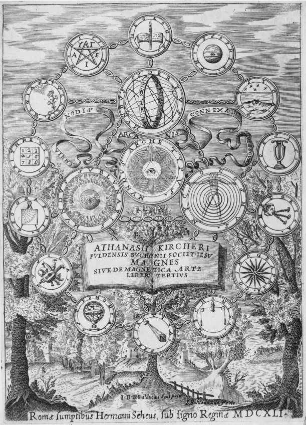

近代早期思想家看到的世界是真正希腊意义上的宇宙 （cosmos），即一个秩序井然、恰当安排的整体。在他们眼中，物理宇宙的各个组成部分彼此密切交织在一起，并且与人和神紧密相关。他们的世界织成了一张关联和相互依存的复杂网络，它的每一个角落都充满了目的、密布着意义。因此对他们而言，研究世界不仅意味着揭示其内容事实并加以分类，而且意味着揭示其隐秘设计和无声的寓意。这种看法与现代科学家形成了鲜明的对比，日益专业化使现代科学家只关注那些狭窄的研究主题和孤立的对象，其方法强调切割而不是综合，其态度主动排除了意义和目的问题。现代研究方法成功地揭示了关于物理世界的大量知识，但也造就了一个脱节的、支离破碎的世界，使人类感到疏离和孤立于宇宙。几乎所有近代早期自然哲学家都持有一种更为广泛和无所不包的世界观，他们的动机、问题和做法正是源于这种视野。因此，要想理解他们研究世界的动机和方法，就必须理解他们的世界观。
一个内在紧密关联的目的论世界的观念有许多来源，但最重要的来源是柏拉图和亚里士多德这两位不可回避的古代巨人以及基督教神学。从柏拉图特别是所谓的晚期柏拉图主义者或新柏拉图主义者——基督教时代最初几个世纪在希腊化的埃及积极发展柏拉图思想的哲学家——那里产生了“自然阶梯”（scala naturae）的思想。根据这种构想，万事万物都在一个连续的层次结构中拥有特殊的位置。其顶端是太一，完全超越的永恒的神，其他一切事物的存在都源于此。太一流溢出创造性的力量，使其他一切事物得以产生。这种力量越是从其来源流溢出来，它所创造的东西就越低和越不像太一。其底部是惰性的、毫无生气的质料。其间的等级按升序排列依次是植物和动物的生命，然后是人类，然后是精神性的存在，如精灵（daimons）和较小的神。一些新柏拉图主义者的目标仿佛是爬上阶梯，变得更具精神性和较少物质性，将人的灵魂——我们最崇高的部分——从堕入物质所导致的盲目性中摆脱出来，经由精神性存在的层次朝着太一上升。这种古代晚期观念和基督教教义相互影响，正如公元5世纪的柏拉图主义基督徒伪狄奥尼修斯所指出的，用不同等级的天使取代异教的精灵和较小的神，用基督教的上帝取代太一，很容易使这种观念符合正统基督教信仰。由于这种基督教化，自然阶梯的观念在整个拉丁中世纪都广为人知，尽管它所基于的古代柏拉图主义文本已经佚失了许多个世纪。
文艺复兴时期的人文主义者重新发现了这些柏拉图主义文本，并由菲奇诺译成了拉丁文。菲奇诺也获得、翻译和出版了一批以“三重伟大的赫尔墨斯”（Hermes Trismegestus）命名的文本，其作者被假想成一位与摩西同时代的古埃及圣贤。大约从公元前3世纪到公元7世纪，大量不同版本的《赫尔墨斯文集》产生出来，菲奇诺所获得的只是其中一小部分。这些文本虽然最初被认为要古老得多，但菲奇诺的《赫尔墨斯文集》实际上可能写于公元2世纪和3世纪。其重要性在于它的新柏拉图主义特征，强调了人类的力量，人类在关联的阶梯世界中的位置，以及人类沿阶梯向上攀升的能力。许多文艺复兴时期的读者在《赫尔墨斯文集》中找到了他们认为的基督教的预示，三重伟大的赫尔墨斯因此成了一位异教的先知，锡耶纳大教堂中描绘的众先知中就有他。
在对世界的阶梯 设想中，任何被造物都有一个位置，都与它之上或之下紧挨着的被造物相关联，因此沿着所谓“伟大的存在之链”从最低层次到最高层次有一个渐进的、无间隙的连续上升。一个相关的概念——存在于柏拉图论述宇宙起源的《蒂迈欧篇》中，这是拉丁中世纪所知的柏拉图的唯一作品——是大宇宙 和小宇宙 。这两个希腊词分别意味着“大有序世界”和“小有序世界”。大宇宙是宇宙的身体，亦即恒星和行星的天文学世界，而小宇宙则是人的身体。其基本思想是，这两个世界的构造基于类似的原则，因此彼此之间存在着密切的关系。公元8世纪的一部被称为《翠玉录》的阿拉伯作品是对《赫尔墨斯文集》的一项晚期贡献，它将这一观点简洁地概括为近代早期欧洲众所周知的一则格言：“上行下效。”对于柏拉图而言，将人的小宇宙与行星的大宇宙联系起来有一种实际的道德意义——我们应把天界有序而合理的运作视为指导，以一种有序、合理的方式来支配自己。对于近代早期的欧洲人而言，小宇宙——大宇宙的联系首先有一种医学意义——它是医学占星术的基础。各个行星对特殊的人体器官会产生特殊影响，从而影响人体的功能（见第五章）。
对于内在关联和目的论的世界观的第二项主要贡献，源自亚里士多德关于如何获得知识的想法。根据亚里士多德的说法，关于事物的严格知识是“因果知识”。我们需要对这个词作出解释。亚里士多德认为，要想认识一个事物，需要确定其四种“原因”或者说存在的理由。第一个原因是动力因 ，它描述了制成该物体的是什么或谁。质料因 描述了该物体是由什么构成的。形式 因说明了是什么物理特征使物体是其所是，亦即其性质的集合。对于亚里士多德主义者来说，最重要的原因是目的因，这也是现代人最难理解的原因。目的因 告诉我们事物是为了什么目的，即其现有的目标是什么，在亚里士多德看来，任何事物都有一个目标或目的。我们可以用阿基里斯的雕像来说明这些“原因”。这尊雕像的动力因是雕塑家，其质料因是大理石，其形式因是阿基里斯的美丽身体，其目的因是为了纪念阿基里斯。每一种原因可能不止一个（例如，雕像还可能有作为装饰，或者在一些雅典式房屋内作为衣帽架的目的因）。
关键的一点是，亚里士多德意义上的知识，特别是关于动力因和目的因的知识，在物体相对于其他物体的关系背景下 对物体作出了定义。认识一个事物意味着找到它在与其他事物，尤其是产生它并且利用它的事物的关系网络中的位置。在欧洲的基督教背景下，目的因与神的设计和神意的观念非常协调。自然中的目的因是上帝创世计划的一部分，第一动力因将该计划植入了受造物并对其进行编码。
近代早期的作者以许多不同方式表达了他们对一个关联世界的理解。因化学工作而著名的英国自然哲学家玻意耳（1627—1691，学习化学的学生仍然要学玻意耳定律，即气体的体积与所施加的压力成反比）指出，世界就像是一部“精心构思的小说”。这里玻意耳暗指他非常喜欢读的那个时代的许多法国小说。这些小说的长度往往超过了2000页，并有许多令人眼花缭乱的主要角色，其复杂的故事情节不断以令人惊讶的方式收敛和发散，字里行间都在透露谁偷偷爱上了谁，谁是真正失散已久的兄弟、子女或无论什么事物。对玻意耳而言，造物主便是最终的小说作家，科学研究者则是那些读者，试图弄清楚造物主在世界中书写的所有关系和错综复杂的故事情节。

图1 基歇尔，《磁石，或者论励磁的方法》（罗马，1641）标题页版画，表明各个知识分支以及上帝、人和自然之间的内在关联。
极为博学的耶稣会士基歇尔（1601/1602—1680）在罗马维护着一座奇迹博物馆，他是耶稣会士就自然哲学进行通信的一个中心。在他关于磁学的一本百科全书式的著作中，一幅优雅的巴洛克风格的卷首插图（图1）描绘了这种内在关联的世界。
该图显示了一系列圆形印章，每一个印章上都带有某个知识分支的名称：物理学、诗学、天文学、医学、音乐、光学、地理学等等，神学则在最顶端。一个链条将这些印章连接在一起，表达了所有知识分支的内在统一性。对于近代早期的人而言，并没有什么严格的壁垒使科学、人文学科和神学彼此隔绝，它们形成了探索和理解世界的环环相扣的方法。在基歇尔的图像中，有链条将这些知识分支与三个更大的印章连在一起，后者代表自然世界的三个主要部分：天界（比月球更远的一切事物）、月下世界（地球及其大气层）和小宇宙（人）。世界的这三个部分也同样连接在一起，表明它们之间存在着无可避免的相互依存关系。整个图像的中心处是分别与三个世界直接接触的原型世界（mundus archetypus），即上帝的心灵，它不仅创造了世间万物，而且包含着宇宙中一切可能事物的模型或原型。基歇尔以一句拉丁文格言完成了这幅图像：“由隐秘之结关联起来的万物平静地安歇着。”
这种对各个学科之间以及宇宙各个方面之间关联性的感受是自然哲学 的典型特征。自然哲学是近代早期自然研究者所从事的学科，它与我们今天所熟悉的科学 密切相关，但在范围和意图上更加广泛。中世纪或科学革命时期的自然哲学家和现代科学家一样研究自然界，但这种研究是在包括神学和形而上学在内的更广泛的视野中进行的。神、人、自然这三个组成部分从未彼此隔绝。到了19世纪，自然哲学观念逐渐让位于更加专业化的狭窄“科学”视角，“科学家”一词正是在此时期被创造出来。如果不时刻牢记自然哲学的独特性，就不可能正确理解或欣赏近代早期自然哲学家的工作和动机。他们的问题和目标并不一定是我们的问题和目标，即使研究的是同样的自然对象。因此，我们撰写科学史时绝不能把那些科学上的“第一次”从历史背景中抽离出来，而只能通过历史人物的眼睛和心灵去审视它们。
自然“魔法”
在16、17世纪得到广泛认同的这种“整体宇宙”观是各种努力和事业的基础，即使不同思想家认为世界中的内在关联对其工作有不同程度的重要性。在自然哲学中，与这种世界观联系最紧密的一个方面是自然魔法（magia naturalis）。把这个拉丁词直接译成英语的“natural magic”是一种误导，因为“magic”一词很容易使现代读者想起特殊打扮的人从帽子里掏出兔子，或者头戴尖顶帽子、身披黑色长袍的皮肤干皱的人在大锅前喃喃自语，或者更加亲切地想起哈利·波特和霍格沃茨魔法学校。而近代早期的自然魔法则非常不同，它是科学史的重要组成部分。
对于现代人来说，magia（魔法）最好的译法也许是“控制”（mastery）。践行魔法者被称为魔法师（magus），其目标是学习和控制内嵌于世界中的各种关联，以便出于实际目的对其进行操纵。再看看基歇尔的卷首插图。在左上角，自然魔法被列为一个知识分支，介于算术和医学之间。基歇尔用向日葵转向每天在天空中行进的太阳来象征它。（有几种植物显示出这种被称为向日性 的行为。）为什么向日葵总是转向太阳，而大多数植物却不这样？显然，太阳与向日葵之间必定存在着某种特殊的关联。向日葵能够跟随太阳，这种能力为世界中隐秘的关联和力量提供了一个绝好例子，魔法师力图确认和控制的正是这些关联和力量。
中世纪的亚里士多德主义者将事物的性质分为两组。第一组是明显性质 ，即任何有感觉器官的人都能觉察的性质。热、冷、湿、干是首要性质。其他性质包括光滑、粗糙、黄、白、苦、咸、响亮、芳香等等所有激活感官的东西。毕竟，亚里士多德主义从根本上讲是一种常识性的与世界打交道的方式。亚里士多德主义者用这些明显性质来解释一个事物对另一个事物的作用，例如冰凉饮料之所以能够退烧是因为冷能够抵消热。但有些物体起作用的方式比较怪异，显示出一些无法解释的性质。这些物体被认为具有我们无法用感官觉察到的隐秘性质 （qualitates occultae，常被误导地译为“神秘性质”）。这些性质常以非常特定的方式起作用，暗示特定事物与其作用对象之间存在着一种特殊的无形关联。中世纪的自然哲学家列出了一系列此类现象。一个典型的例子是磁铁。关于磁石（一种天然的磁性矿物），我们感觉不到任何东西能够解释它吸引铁的神秘能力。太阳与向日葵之间的表观吸引力、罗盘针指向北极星、鸦片的催眠作用、月亮对潮汐的影响以及其他许多事物也是如此。自然魔法便是要努力找出事物的这些隐秘性质及其效应并加以利用。
如何在自然中发现这些关联、这些“隐秘的结”呢？一种方法是近距离地观察这个世界。每个人都会同意，认真观察是科学研究的一个关键出发点；寻求自然魔法促进了这样的观察。同样重要的一种方法是发掘早期自然观察者的记录——古往今来各种文本记录中或平凡或怪异的叙述和观察。因此，许多魔法都要基于对文本进行人文主义式的认真解读，通过搜集早期作者的说法而建立起复杂的网络。鉴于自然的无限多样性，雄心勃勃的魔法师的任务宏大得令人难以置信——几乎是为所有事物的属性进行编目。是否可能存在一种捷径？一些自然哲学家相信自然中包含着若干线索来引导魔法师，这些线索也许由一个仁慈的上帝植入自然，希望我们明白他的创造并从中获益。征象学说 （doctrine of signatures）声称，一些自然物被“签署”（signed）了显示其隐秘性质的迹象。这往往意味着两个有关联的物体看起来有些相似，或者有一些类似的特征；例如，向日葵不仅追随太阳，日葵花的颜色和形状也类似于 太阳。植物的各个部分好似人体的各个部分；外壳中的核桃仁看起来很像颅骨中的大脑。这是否暗示着核桃补脑呢？魔法师固然要试验这些东西，但观察以及征象的观念为研究、解释和利用自然界提供了一个有益的出发点。
征象学说只是代表着近代早期无处不在的一种更广泛的类比思维模式的一个方面。现代人往往会把这些相似之处看成仅仅是巧合或偶然，或者看成“诗意的”而不是物理的，但近代早期的许多人看待事物的方式却完全不同。他们预料 世界的各个部分之间存在着类比关联，对他们来说，发现自然之中存在着一种类比或对称就意味着事物之间存在着一种实际关联。两个自然物之间的每一种类比绝非人类想象力的产物，而是标示出了创世蓝图中的又一条线，是上帝植入宇宙的一种隐秘关联的可见迹象。因此，类比论证所具有的特殊力量和明证性超出了我们今天的习惯看法。这种联系的确实性乃是基于一种不可动摇的信念，即相信宇宙不是随机或偶然的，而是充满着意义和目的，它由神的智慧和意志以多种方式引导，最终是为了人类的利益。这种确定性以及随之而来的对类比推理的运用并非为那些对自然魔法感兴趣的人所独有，而是属于这一时期几乎每一位 严肃的思想家。
运用直接观察、类比、权威文本和征象，近代早期思想家搜集了大量他们认为存在关联的事物。例如，还有什么可能关乎太阳与向日葵的关联？太阳是大宇宙的热源和生命之源，它在小宇宙中的对应部分必定是心脏。（再看看基歇尔的卷首插图——在代表小宇宙的人体的心脏位置有一个小太阳。）太阳是最高贵的天体，光辉夺目，呈现明亮的黄色，类似于矿藏中的黄金，并进而类似于所有黄色或金色的东西。在动物领域，太阳使公鸡打鸣，表明两者之间有一种特殊关联。狮子的黄褐色、百兽之王的地位以及类似于太阳的头部（狮子头上的鬃毛宛如太阳射线）似乎也与太阳有关联。同样，狮子的勇敢又对应于心脏。太阳、向日葵、心脏、黄金、黄色、公鸡和狮子都有某些共同特性，因而存在着实际却又隐秘的关联。在自然魔法的倡导者看来，可以把这些类比关联变成可利用的操作性关联。最实际的应用是把黄金或向日葵用作治疗心脏的药物——但我们将会看到，事情可能变得更富戏剧性。
究竟是什么东西把束缚在这些相似性网络之中的物体关联起来，人们对此有不同看法。但这些物体通常被认为是通过“共感”（sympathy）起作用，其字面意思是“一起遭受或一起接受作用”。考虑两张调好音的鲁特琴，分别位于房间两侧，拨动其中一张琴的弦，则另一张琴相应的弦将立即开始振动并发出嗡嗡声，与拨动第一张琴发出的声音相呼应。今天，我们仍然称这种现象为共 振（sympathetic vibration）。对于近代早期思想家来说，这种现象体现了空间上分离的彼此“合调”的两种东西之间看不见的关联。有些人认为，空间上分离的东西之间要想传递作用必须通过介质；亚里士多德指出，如果没有一种居间的介质传递效果，一个物体就不可能作用于另一个有空间距离的物体。例如就琴弦而言，我们知道居间的空气传递着两个乐器之间的振动。对于其他共感作用，该介质可能是所谓的“世界精气”（spiritus mundi ）——一种普遍的、渗透一切的、无形的或准有形的东西，通过把影响从一个物体传到另一个物体，它能使相距遥远的物体实质上彼此接触。这种“精气”并不是某种具有感知能力的超自然的东西，而是大宇宙中与小宇宙的“生命精气”等价的东西，“生命精气”是我们身体之中一种精细的东西，当我们的理智意识到有一辆两吨重的卡车正在加速向我们驶来时，“生命精气”经由神经将“快跑”的命令传到我们的脚。“世界精气”也类似地把“信号”从太阳传到向日葵，或者从月亮传到海水。大宇宙和小宇宙再次彼此映射，两者都包含着传递信号的精气。顺便提及，这种相似性也意味着大宇宙本身拥有某种灵魂——柏拉图在《蒂迈欧篇》中断言了这一点，现代人尤其难以理解——下一章我们会回到这一点。
从厨房到书房的实践“控制”
关于关联世界的自然魔法理论令人印象深刻，堪称优雅和美妙，但自然魔法的关键特征在于实际应用。近代早期魔法的实践部分既有平常的也有崇高的，前者往往没有任何理论基础。德拉·波塔（1535—1615）的《自然魔法》一书便是一个很好的例子。德拉·波塔因为在那不勒斯建立了最早的科学社团——秘密学院——和身为猞猁学院的一员而闻名，猞猁学院是17世纪初的科学社团，伽利略即为其中一员。德拉·波塔《自然魔法》的第一章概括了一个内在关联的世界的原理，并指出魔法为何“是对整个自然进程的考察”以及“自然哲学的实践部分”。他建议读者“大力对事物进行探究；既要积极认真研究，又必须耐心等待。……必须不遗余力地做事，因为自然的奥秘不可能透露给懒惰的闲人”。德拉·波塔的书的其余部分所揭示的实际自然奥秘的确包括对磁学和光学的考察，但该书的大部分内容却是各种秘方和诀窍，从制作人造宝石和烟花爆竹，到动植物育种，再到关于制作香料、烤肉、水果保鲜等等的家用建议，其中没有任何东西利用了关于世界的理论观念。德拉·波塔的书符合一种“秘密之书”的传统，这种传统在整个16、17世纪变得越来越流行，而这些“秘密之书”中有一部分直到19世纪还被重印。许多此类书籍都是先来阐述关于宇宙的宏大而崇高的观念，但主要内容是家庭管理或家庭手工业的诀窍，并不包含或几乎不包含关于世界本性的内容。
菲奇诺（1433—1499）处于该阶梯的崇高一端，他将世界关联性的实际应用体现在生活方式和仪式中。菲奇诺经常抱怨自己的忧郁气质，他也许深受我们现在所谓的忧郁症之苦。当时的医学认为，黑胆汁——保持平衡才能维持健康的四种“体液”之一——如果占优势就会导致忧郁。事实上，表示黑胆汁的希腊词melaina chole 正是“忧郁”（melancholy）一词的来源。（同样，被称为多血质、胆汁质和黏液质的性情分别缘于其他三种体液——血液、黄胆汁和黏液——占优势；见第五章。）菲奇诺研究了学术生活与忧郁之间的关联，建议其知识同道改变生活方式以解决问题。菲奇诺制定了一份食谱和药用补品清单，以防体内形成过多的黑胆汁，他的《论从天界获得生命》一文提出用天界的影响来应对这种职业病对学者的危害。
医生认为黑胆汁有冷和干这两种明显性质。土星拥有这些性质，从而与黑胆汁有一种共感关联。因此，任何与黑胆汁和土星相似的东西都要避免。太阳（热—干）和木星（热—湿）的相反性质抵消了黑胆汁的冷—干，因此通过类比扩展，任何与太阳和木星相似的东西都可能有助于缓解学术忧郁。［我们的“快乐”（jovial）一词的字面意思是“与木星有关的”，即显示出这种推理在我们的语言中是多么根深蒂固和得到承认］。因此，为了利用与太阳的共感关联，这位佛罗伦萨人文主义者建议穿黄色和金色的衣服，用向日性的花来装饰房间，获得充足的阳光，佩戴黄金和红宝石，吃“日光”食物和香料（如番红花和肉桂），聆听和歌唱和谐庄严的音乐，焚烧没药和乳香，适度饮酒。然而，当他还建议以古代新柏拉图主义者普罗提诺和扬布里柯为榜样——他将他们的作品从希腊文译成了拉丁文——制作图像来吸引和捕捉行星的力量时，一些读者认为这就有些过分了；对于一个被授以圣职的罗马天主教神父来说，这样做是相当可疑的。事实上，可以把菲奇诺理解成在这一点上跨越了界限，从自 然 魔法步入了精神 魔法，虽然他很可能对这种解释表示异议。自然魔法运用隐藏于自然中的共感，而精神魔法则求助于精神性的存在——异教希腊哲学中的精灵和诸神，或者基督教神学中的魔鬼和天使。自然魔法不会招致反对，而精神魔法（非常合理地）招致了神学家的谴责。人们针对菲奇诺的正统性提出了一些质疑，但似乎没有采取任何行动，因为可以把这些仪式理解成完全是物理的和药用的，因此完全可以接受。例如，一个多世纪以后，多明我会修士托马索·康帕内拉和教皇乌尔班八世用一场灯火、色彩、气味和声音的仪式（与菲奇诺的处方不无相似之处），来抵消日食期间因暂时失去健康的太阳影响而可能产生的任何不良影响——曾有人预言这次日食会导致教皇死亡。教皇活了下来。虽然在预想的操作中该魔法是自然魔法，但一些旁观者的确认为这样的应用是可疑的。
现如今，对自然魔法的应用以及整个关于共感和类比的内在关联的世界这一观念有时会被斥为非理性或迷信。这种严厉判决是错误的。它源于某种自鸣得意的傲慢和历史认识的匮乏。我们的前人所做的，是对看起来类似的各种神秘自然现象作出观察，并由此将世界中的各种关联和作用传递推广为一种更普遍的说法——一种自然法则。这种推广导出了他们坚持而我们不认同的一个信条，即那些相似或类似的物体正在静静地彼此施加影响。一旦作出这样的假设，体系的剩余部分就可以在此基础上合理地建立起来。他们试图理解世界，试图理解事物并利用自然的力量。他们将观察或叙述的事例归纳成一般原则，然后演绎出其推论和应用。我们也许会说（因为我们知道更新的研究），太阳与向日葵，月亮与大海，或者磁与铁之间的作用，可以不通过隐秘的共感之结而得到更好的解释。但我们并不能说他们的方法或结论是非理性的，或者由此产生的信念和做法是“迷信”。如果允许作这样的跳跃，那么在我们理解世界的过程中最终未被接受的每一种科学理论——无疑包括我们今天相信是对现象的正确解释的一些事物——都将被判定为非理性和迷信，而不单纯是在当时既定的观念、观点和信息条件下通过理性方式得出的错误想法。
科学研究的宗教动机
自然魔法只是最强有力地表达了关联的世界、大宇宙和小宇宙以及相似性的力量这些广泛持有的观念。而同样类型的关联和思想往往隐含在从未强调自然魔法的自然哲学家的工作中。例如，当时每一位思想家都确信人、神与自然界之间存在着密切的关联，并因此确信神学真理与科学真理的内在关联。这种特征引出了科学与神学/宗教这一复杂论题。为了理解近代早期的自然哲学，有必要摆脱几种常见的现代假设和偏见。首先，几乎每一个欧洲人，当然也包括本书所提到的每一位科学思想家，都信仰并践行基督教。认为科学研究（无论是否现代）都需要一种无神论——或者美其名曰“怀疑论”——观点，这是那些希望科学本身成为一种宗教的人（他们通常亲自担任圣职）在20世纪提出的一则神话。其次，对于近代早期的人而言，基督教教义并非意见或个人选择，而是自然事实或历史事实。不同教派就更高级的神学观点或仪式活动显然存在着争执，就像今天的科学家就细节进行争论而不去质疑重力的实在性、原子的存在性或者科学事业的有效性一样。神学从未降格为“个人信念”；和今天的科学一样，神学既是一些经过商定的事实，又是对关于存在的真理的不断追寻。其结果是，神学信条被认为是近代早期自然哲学家进行研究所必备的数据集的一部分。因此，神学思想在科学研究和思辨中发挥了重要作用——不是作为外部“影响”，而是自然哲学家正在研究的世界的不可分割的组成部分，需要认真对待。
今天，许多人都会默认那个在19世纪末炮制出来的流传甚广的神话，即“科学家”与“宗教人士”之间进行着一场可歌可泣的斗争。尽管双方的一些成员仍在通过今天的行为不幸地延续着这个神话，但每一位现代科学史家都已经拒斥了这种“冲突”模式，因为它并未反映历史的真实情况。在16、17世纪和中世纪，并没有一个“科学家”阵营在奋力摆脱“宗教人士”的镇压，这些不同阵营根本就不存在。关于压迫和冲突的流行故事充其量是过度简化或夸张，在最坏的情况下则是毫无根据地捏造（见讨论伽利略的第三章）。相反，自然研究者本人都笃信宗教，许多神职人员也是自然研究者。神学研究与科学研究之间的关联部分地基于“两本大书”的想法。圣奥古斯丁和其他早期基督教作家阐述了这种想法，认为上帝以两种不同方式向人类显示自己——一是启示人写出《圣经》，二是创造这个世界即“自然之书”。和《圣经》一样，我们周围的世界是需要进行解读的神圣讯息，敏锐的读者通过研究受造世界可以远为深入地了解造物主。这种深植于正统基督教之中的想法意味着对世界的研究本身就可以是一种宗教行为。例如，罗伯特·玻意耳就认为他的科学研究是一种宗教献身（因此特别适合在周日进行），自然哲学家可以通过沉思上帝的创造而增进对上帝的认识和察觉。玻意耳把自然哲学家描述成“自然的牧师”，其职责就是阐述和解释书写在自然之书中的讯息，收集和表达所有被造物对其创造者的无声赞美。
总之，近代早期的人——以不同方式——看到了一个内在关联的世界，其中一切事物（人类、上帝以及所有知识分支）由千丝万缕的联系构成一个整体。在某些方面，也许可以把生态学和环境科学的新近发展，看成在一定程度上恢复了近代早期自然哲学家在其世界中设想的那个看不见的相互依存网络。无论如何，近代早期的思想家和中世纪先辈一样，凝望着一个充满关联的世界，一个富于目的和意义，饱含神秘、奇迹和许诺的世界。